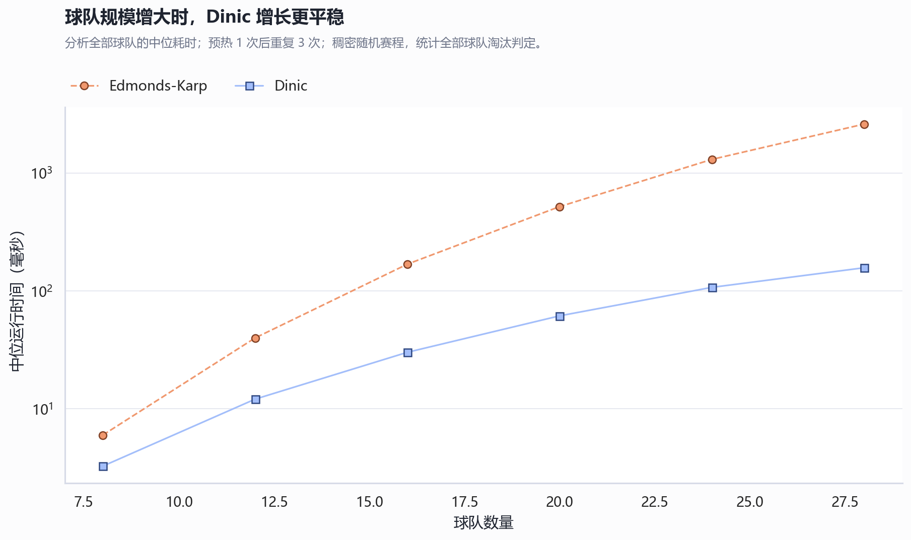
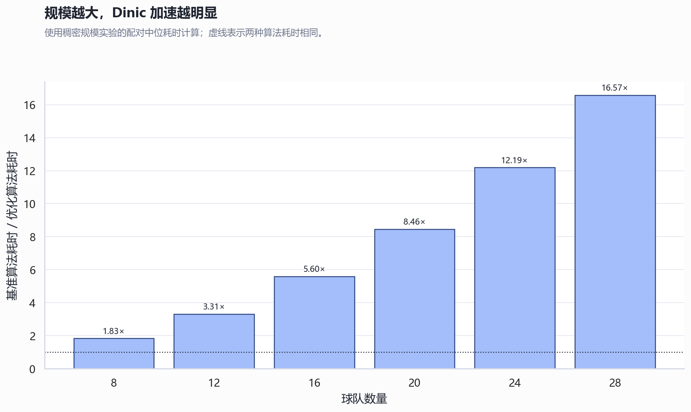
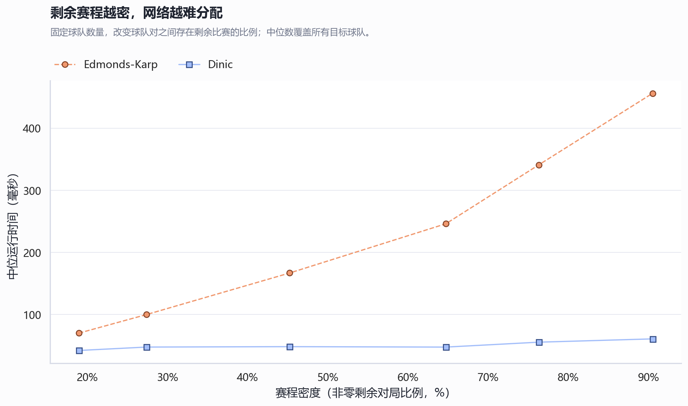
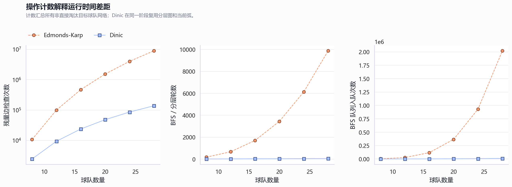
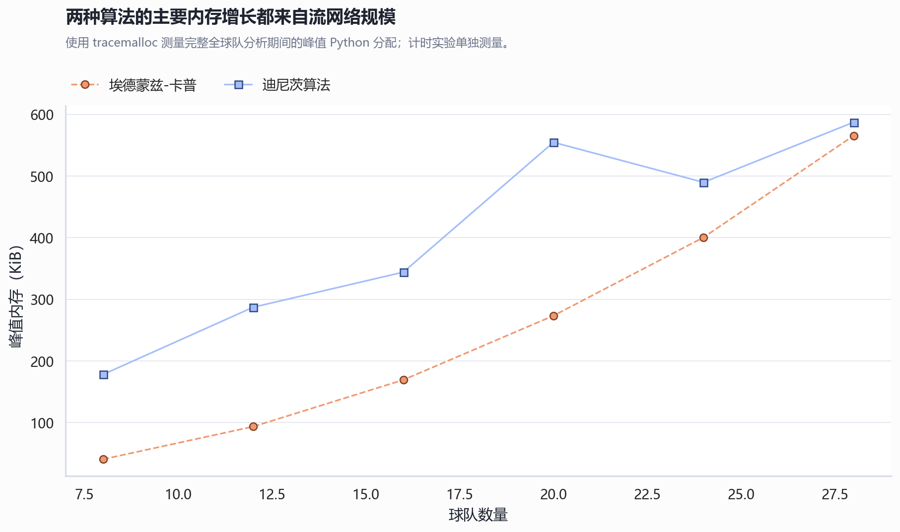
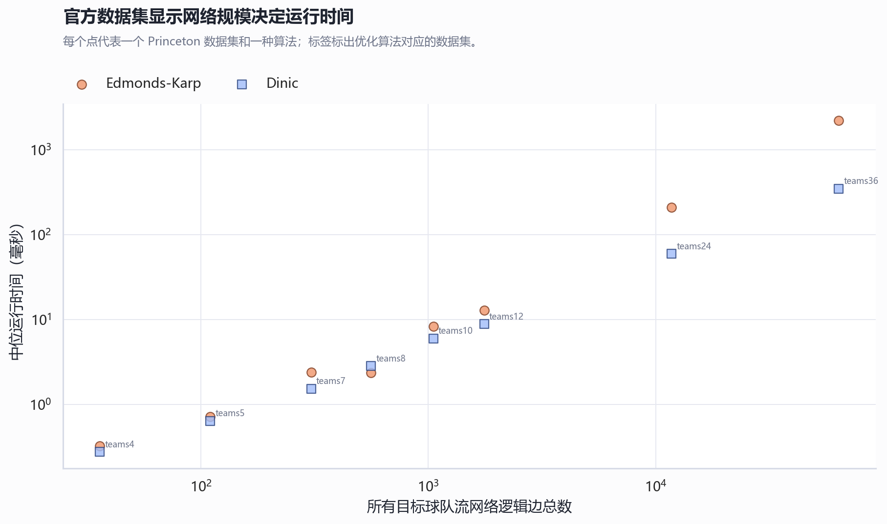

Maximum Flow Learning Studio
棒球淘汰 · 最大流动态实验台
把流网络构造、BFS 分层、增广、阻塞流、残量更新和最小割证明， 绑定到同一条可回放时间轴。
等待数据
0%
Residual Network
残量网络主舞台
源点 → 比赛节点 → 球队节点 → 汇点
当前搜索/增广路
可用残量边
饱和边
最小割源侧
Trace Timeline
可点击时间轴
聚合显示构网、搜索、增广、分层和最小割等关键事件。
Extended Benchmarks
算法性能实验
同时观察耗时、加速比、密度敏感性、操作次数、峰值内存和官方数据表现。





